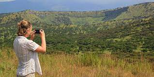

Turismo verde
Esta pandemia del covid19 ha obligado a miles de destinos turísticos en todo el mundo a cerrar sus puertas al turismo con la consecuente pérdida de ingresos económicos, empleos, empresas, etc. y creando un ambiente de miedo por la incertidumbre del futuro inmediato.
Ya no se trata de poder abrir los diferentes negocios y atractivos turísticos, sino captar la atención de los turistas potenciales, porque el entorno venidero será de una competencia tremenda por su enfoque al mismo mercado.
La recuperación de la demanda y la regeneración del destino rural lleva su tiempo y en principio lo que más se necesita es un Plan de Marketing y Comunicación que pueda convencer a los potenciales visitantes para que lleguen y se queden en los territorios.

Pero la gran diferencia entre un plan de marketing convencional y el plan de marketing digital estriba en que el digital facilita tener resultados en apenas 2 o 3 meses, con indicadores de información diarios, lo que permite corregir cualquier mínimo error o cambio de ruta, según la respuesta de la demanda.
Forum Natura, consciente de esta situación y siguiendo su política de apoyo a transformar los territorios en destinos y éstos en entornos turísticos sostenibles y verdes, lanza esta iniciativa/campaña de apoyo a estos destinos rurales (Se incluye zonas del litoral también) con un aporte anual de 15.000 € en publicidad de Google Ads, uno de nuestros partners en el proyecto.
Y si bien se podrán escoger 5 destinos (Por limitación presupuestaria y por eficacia en la gestión), esperamos poder aumentar este número, acorde a la evolución del proyecto.